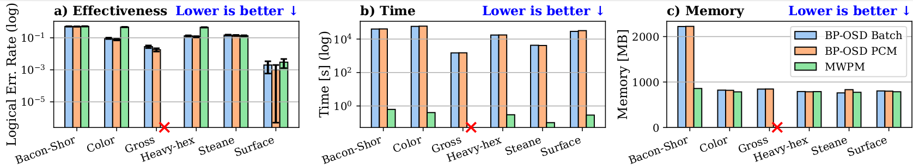
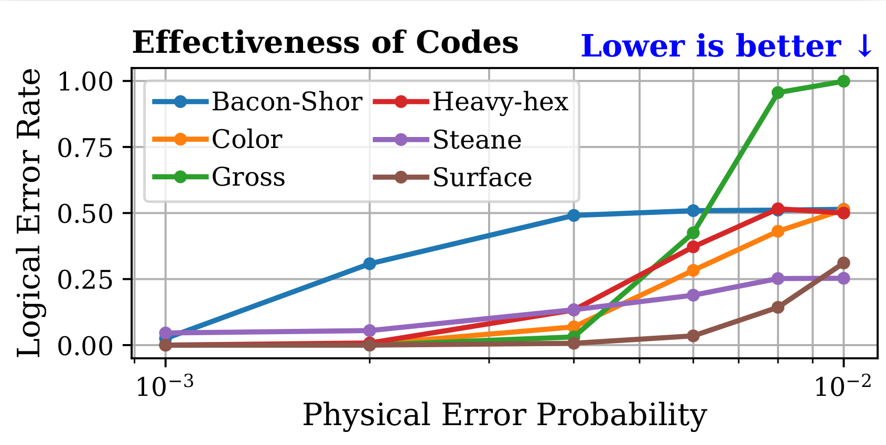

This section evaluates the correcting abilities of decoders and QEC codes, identifying the regimes where QEC provides meaningful error suppression.
We evaluate two open-source decoders: BP-OSD and MWPM. The BP-OSD parity-check decoder achieves the best overall performance, outperforming MWPM by 46.66% on average against the SI1000 noise model. However, this accuracy comes at a substantial computational cost (8 hours vs. 0.34 seconds for MWPM).

Figure 1: Trade-off between speed and accuracy across various decoding algorithms.
QEC is not universally beneficial. Once a code’s threshold is crossed, its performance deteriorates rapidly. At a two-qubit error probability of 0.004, all tested codes cross their thresholds, while unprotected qubits still show no observed errors.

Figure 2: Logical error rate vs. physical error probability, showing threshold crossings.